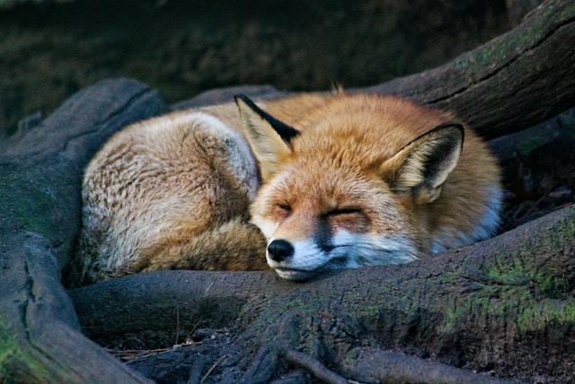
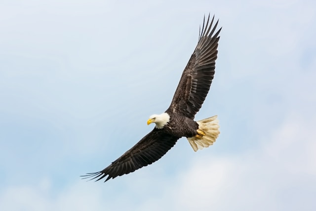
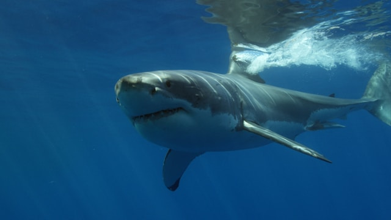

Animais Fantásticos
-

- 
-

- 
- 
-

Onça
A onça-pintada (Panthera onca) é o maior felino das Américas e um dos predadores mais poderosos da natureza. Encontrada principalmente em florestas tropicais, como a Amazônia e o Pantanal, ela se destaca por sua pelagem dourada com manchas pretas, que ajudam na camuflagem. Diferente de outros felinos, a onça tem uma mordida incrivelmente forte, capaz de perfurar o casco de tartarugas e o crânio de presas maiores. Apesar de sua força e habilidade como caçadora, a espécie enfrenta ameaças devido ao desmatamento e à caça ilegal. Proteger a onça é essencial para manter o equilíbrio dos ecossistemas onde ela vive.
Raposa
A raposa é um mamífero astuto e adaptável, encontrado em diversos habitats ao redor do mundo, desde florestas até áreas urbanas. A espécie mais conhecida, a raposa-vermelha (Vulpes vulpes), possui uma pelagem avermelhada, cauda longa e um olfato aguçado, características que a tornam uma excelente caçadora. Onívora, sua dieta inclui pequenos animais, frutas e até restos de comida humana. Apesar de sua aparência elegante, a raposa é um animal solitário e discreto, movendo-se com agilidade, principalmente à noite. Inteligente e versátil, ela simboliza esperteza em diversas culturas e continua fascinando por sua incrível capacidade de adaptação.
Lobo
O lobo (Canis lupus) é um dos predadores mais icônicos do mundo, conhecido por sua inteligência, força e forte senso de grupo. Vivendo em matilhas bem organizadas, os lobos caçam juntos para derrubar presas maiores, como cervos e alces. Sua comunicação é complexa, envolvendo uivos, expressões faciais e linguagem corporal. Encontrados em diversos habitats, desde florestas até tundras geladas, eles desempenham um papel essencial no equilíbrio ecológico. Apesar de sua importância na natureza, os lobos foram historicamente perseguidos pelo homem, mas esforços de conservação vêm ajudando na recuperação de suas populações. Símbolos de resistência e lealdade, continuam a inspirar admiração e respeito.
Águia
A águia é uma ave de rapina majestosa, conhecida por sua visão aguçada, voo poderoso e habilidades de caça impressionantes. Entre as espécies mais famosas, a águia-real (Aquila chrysaetos) e a águia-careca (Haliaeetus leucocephalus) se destacam por sua imponência e presença em diversas culturas como símbolos de força e liberdade. Com garras afiadas e um bico curvado e resistente, a águia captura suas presas com precisão, muitas vezes mergulhando em alta velocidade. Habitante de montanhas, florestas e planícies abertas, ela desempenha um papel crucial no equilíbrio dos ecossistemas. Respeitada e admirada, a águia representa determinação e grandeza na natureza.
Tubarão
O tubarão é um dos predadores mais fascinantes e antigos dos oceanos, existindo há milhões de anos. Com um corpo hidrodinâmico, sentidos altamente desenvolvidos e uma mordida poderosa, ele domina os mares como um caçador eficiente. Existem mais de 500 espécies, desde o temido tubarão-branco (Carcharodon carcharias) até o pacífico tubarão-baleia (Rhincodon typus), o maior peixe do mundo. Apesar de sua fama de perigoso, a maioria dos tubarões não representa ameaça aos humanos. Infelizmente, eles estão sob grande risco devido à pesca predatória e à destruição de habitats. Essenciais para o equilíbrio marinho, os tubarões merecem ser protegidos e respeitados.
Borboleta
A borboleta é um dos insetos mais encantadores da natureza, conhecida por suas cores vibrantes e voo delicado. Passa por uma incrível transformação ao longo de sua vida, desde a fase de lagarta até o desabrochar de suas asas na fase adulta. Encontradas em diversos habitats ao redor do mundo, as borboletas desempenham um papel essencial na polinização das plantas. Suas asas leves e coloridas não são apenas um espetáculo visual, mas também uma forma de defesa, ajudando-as a se camuflar ou afastar predadores. Símbolo de renovação e beleza, a borboleta representa a efemeridade da vida e a constante transformação da natureza.